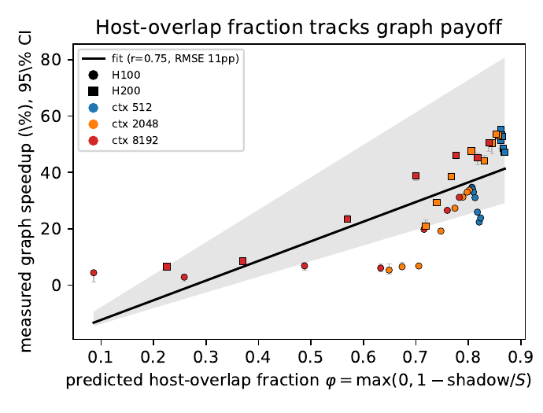
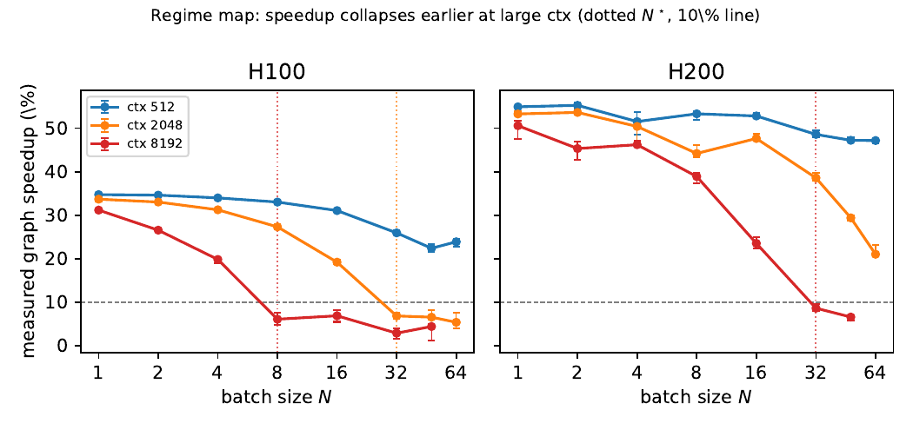
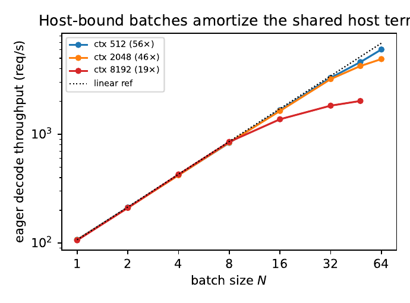
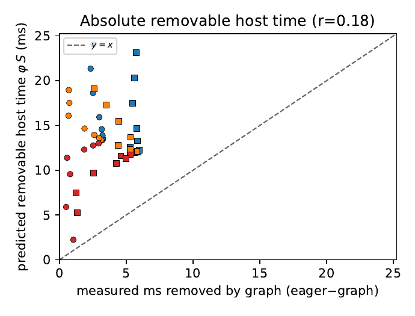

CUDA-graph capture removes per-step launch and dispatch overhead from LLM decode — but the speedup it buys ranges from 2.9% to 55.3% on the same model and GPU. We ask whether that payoff is predictable before you capture, from a single frozen step model. The answer: a closed-form host-overlap fraction φ tracks the measured speedup across 46 cells at r = 0.75, and orders the crossover batch exactly. Honest scope: it is a directional regime map, not a tight latency number.
Every modern LLM engine offers CUDA-graph capture, which records the hundreds of kernel launches a decode step issues and replays them with a single submission, erasing most per-step host overhead. Operators treat it as ‘free latency,’ but it is not uniformly free: on the same Llama-3.1-8B and the same GPU, the decode speedup swings from 2.9% to 55.3% depending only on batch size and context length. Whether capture is worth its memory and cold-start cost depends on which regime you are in — and until now there was no closed-form way to know in advance. This study builds one.
A host-overlap fraction φ — the share of the per-step host floor not already hidden behind GPU work — is computed from a frozen, microbenchmark-calibrated step model with zero access to the measured speedups. Across 46 cells it correlates with the measured CUDA-graph decode speedup at Pearson r = 0.75 (0.74 on H100, 0.92 on H200). A single global line speedup ≈ 0.70·φ − 0.19 carries the relationship.
There is a crossover batch N* where graph payoff drops below 10%, and it lands exactly where φ says it should. At H100 ctx 512 decode stays host-bound and graphs help through N = 64; ctx 2048 collapses at N = 32; ctx 8192 is compute-bound and collapses by N = 8. Longer context puts more KV-read work on the GPU, lowers φ, and moves the crossover to smaller batch — no graph measurement enters that prediction.
The per-step host floor is paid once and grows only weakly with batch (0.20 ms/req). So in the host-bound regime, adding requests is nearly free per request: decode throughput scales 56× from N = 1 to N = 64 at H100 ctx 512 (and 56× on H200). It saturates only past the compute knee — 19× at H100 ctx 8192, 25× at H200 ctx 8192 — where each added request lengthens the GPU kernels.
This is a characterization-grade directional predictor, not a tight one: the global fit has 10.9 pp RMSE, so φ predicts the direction and rough magnitude of payoff, not a <5% latency value. The predictor's removable host time φS correlates with the ms actually removed (r = 0.18) but over-predicts the absolute removal by about 4×. We use φ's ordering, not its absolute magnitude.
No background is assumed. Three ideas are enough to follow the rest: what a decode step costs, what CUDA-graph capture removes, and why the classic roofline cannot predict whether removing it helps.
To write one token the model runs its full forward pass, which on the GPU is a long list of small programs called kernels. While the GPU executes them, a CPU-side host — the Python scheduler and the runtime — is busy too: dequeuing the running batch, updating sequence state, mapping paged-KV blocks, building kernel arguments, and issuing each launch. A step's wall-clock time is a race between the GPU-compute time of running the kernels and this per-step host floor. When the GPU kernels are long (large batch, long context), the host work hides behind them; when the kernels are short, the host floor is exposed on the critical path.
In eager mode, Python re-issues every kernel launch and runs the scheduler on the critical path each token. CUDA-graph capture records the fixed launch sequence once and replays it as a single submission, eliminating per-launch CPU cost and most framework dispatch. But the benefit is bounded by how much host work was on the critical path to begin with — that is, by the exposed fraction φ. When φ is high (host-bound) capture buys a lot; when φ is near zero (compute-bound) capture buys almost nothing because the host work was already hidden.
We reuse a self-contained single-GPU step model unchanged — no parameter is fit to the graph-vs-eager cells of this paper. It writes the eager decode step as GPU-visible work (the larger of a roofline kernel sum and the serialized launch floor) plus a measured per-step host floor S(N) and a small sampling term.
The new quantity is the host-overlap fraction φ: the share of the host floor S not already shadowed by GPU work, hence the part graph capture can recover. The shadow is whatever GPU compute exceeds the dispatch floor.
The protocol is deliberately one-directional: compute φ from the frozen model first, with no sight of the measurements, then run vLLM twice per cell (eager and graph capture) and measure the per-decode-step speedup. The fit in the figures is a single global descriptive line, not a per-cell calibration.
For N prompts of length ctx the engine generates T = 65 tokens with the ignore-eos flag and greedy sampling. The steady-state per-decode-step time is recovered by a subtraction over the high-level generation API that cancels the fixed prefill and startup overhead, leaving the decode work alone. Sampling and detokenize are included.
The sweep is batch N ∈ {1, 2, 4, 8, 16, 32, 48, 64} and context {512, 2048, 8192}, with 15 timed reps per cell after 2 warmups, reported as medians with bootstrap 95% CIs. Cross-SKU claims use only the cells present in both modes on both SKUs — 46 cells total. The host floor S(N) is measured on an independent single-GPU framework-overhead microbenchmark (S(1) = 16.6 ms on H100, 14.0 ms on H200; slope 0.20 ms/req), and the roofline GPU constants are datasheet/ncu values; nothing here is fit to the speedups being predicted.
For H100, N = 1, ctx 512 the frozen predictor gives T_blocks = 5.97 ms, T_dispatch = 2.76 ms, S = 16.6 ms, so shadow = 3.21 ms and φ = 1 − 3.21/16.6 = 0.807. The measured eager step is 9.31 ms and the graph step 6.08 ms — a speedup of 34.7% (95% CI [34.6, 35.0]). A high-φ, host-bound cell where capture pays, exactly as the fraction implies.
Across all 46 cells the predicted overlap fraction correlates with the measured CUDA-graph decode speedup at Pearson r = 0.75 (per SKU r = 0.74 on H100, 0.92 on H200). A single global line speedup ≈ 0.70·φ − 0.19 fits with 10.9 pp RMSE; the slope's 95% bootstrap CI is [0.56, 1.15], so the positive association is robust to cell resampling. The high-overlap H200 cells — higher bandwidth shortens GPU kernels, raising φ — show the largest speedups, consistent with the model.

Predicted host-overlap fraction φ vs measured CUDA-graph decode speedup, all 46 cells (H100 circles, H200 squares; color = context). Error bars are 95% bootstrap CIs over the 15 reps; the shaded band is the bootstrap CI on the fit slope. The single line 0.70·φ − 0.19 has r = 0.75, 10.9 pp RMSE: a directional, characterization-grade predictor.
| SKU | #cells | r(φ, speedup) | speedup range |
|---|---|---|---|
| H100 | 23 | 0.74 | 2.9–34.7% |
| H200 | 23 | 0.92 | 6.6–55.3% |
| pooled | 46 | 0.75 | 2.9–55.3% |
Plotting speedup against batch N per context exposes a crossover batch N* where graph payoff collapses below 10%, and it is context-ordered exactly as φ predicts. At H100 ctx 512 decode is host-bound at every batch measured and never collapses through N = 64; at ctx 2048 it collapses at N = 32; at ctx 8192 the step is compute-bound (long KV reads) and collapses by N = 8. Larger context puts more KV-read work on the GPU, lowering φ at every N and moving the crossover to smaller batch. H200's higher bandwidth keeps it host-bound longer: ctx 2048 never collapses, and ctx 8192 collapses only at N = 32.

Regime map: measured graph speedup vs batch N per context (95% CIs). Dotted verticals mark the crossover N* (speedup < 10%); the dashed line is the 10% threshold. Short contexts (ctx 512) stay host-bound and keep paying off through N = 64; long contexts (ctx 8192) become compute-bound and collapse early — the context ordering φ predicts.
| SKU | ctx 512 | ctx 2048 | ctx 8192 |
|---|---|---|---|
| H100 | — | N* = 32 | N* = 8 |
| H200 | — | — | N* = 32 |
Crossover batch N* where measured graph speedup first drops below 10% (‘—’ = never collapses through N = 64). Larger context becomes compute-bound at smaller N, exactly as φ predicts.
The host floor S(N) is paid once per step and grows only weakly with batch (0.20 ms/req), so in the host-bound regime adding requests to a step is nearly free per request. Decode throughput is near-linear in N — 56× from N = 1 to N = 64 at H100 ctx 512, and 56× on H200. It saturates only once the step crosses the compute knee, where each added request lengthens the GPU kernels: 19× at H100 ctx 8192, 25× at H200 ctx 8192. The corrected reading is that host-bound batches amortize the shared host term (near-linear), and saturation appears past the compute knee — not at the latency crossover N*.

Eager decode throughput (req/s) vs batch N (H100, log–log). In the host-bound regime (ctx 512) batching amortizes the shared per-step host floor, giving near-linear scaling (56× at N = 64); only past the compute knee (ctx 8192) does it saturate (19×).
Decode throughput scale-up from N = 1 to N = 64: near-linear (56×) in the host-bound ctx-512 regime, saturating (19–25×) once past the compute knee at ctx 8192.
The predictor's removable host time φS correlates with the ms graph capture actually removes (r = 0.18) but is about 4× larger in absolute terms: capture recovers only a fraction of the exposed host floor — the remainder is Python/runtime overhead graphs do not eliminate, and partial overlap the model treats as fully removable. This is why φ is used as a normalized, directional indicator: its ordering of configurations is what holds at r = 0.75, not its absolute magnitude. It is an honest predictor of when capture pays, not of exactly how many milliseconds it saves.

Absolute check: the predictor's removable host time φS (ms) vs the ms actually removed by graph capture, eager − graph. The two are correlated (r = 0.18) but φS over-predicts the absolute removal by ≈ 4×: capture recovers only part of the exposed host floor. φ is therefore a relative/directional indicator, not an absolute-ms predictor.
The value of the result divides by audience. For operators it is a decision tool that needs no profiling run; for model builders it is a precise statement of where a roofline mechanism model can be extended to predict graph payoff and where it cannot pretend to be tight.
Given (N, ctx, SKU) you can read off φ from the frozen model and decide whether CUDA-graph capture's memory and cold-start cost is worth it — before capturing. Decode-only replicas in prefill/decode-disaggregated serving run exactly in the small-kernel, high-φ regime where capture pays most; chunked prefill raises the GPU term and pushes a step toward the compute-bound, low-φ side where it does not.
The classic two-regime roofline has no host axis, so it cannot distinguish a host-bound step from a compute-bound one. φ adds that axis as a ratio of the GPU shadow to the measured host floor, and it is what makes graph payoff predictable. The error is honest: 10.9 pp RMSE comes mostly from GPU-side roofline error in the long-context, low-φ tail (where attention dominates and the speedup is smallest), while the directly-measured host floor carries no fit.
This page is part of a host-term portfolio: a family of measurement studies that isolate the per-step host/scheduler term in LLM decode and ask what it predicts, what removes it, and how it scales. Back to the portfolio →
The claims are deliberately bounded. Each item names a specific way the result could be over-read and the precise scope that remains valid.
The conclusions hold for Llama-3.1-8B in BF16, TP-1, on the single-GPU PACE SKUs H100 and H200, over the 46 cells present in both eager and graph modes on both SKUs. The central finding — that a frozen host-overlap fraction φ orders the CUDA-graph decode payoff and its context-dependent crossover — is the part expected to generalize, as a directional regime map, beyond this grid.